35 Polymerisation
Condensation polymerisation, addition polymerisation and degradable polymers
35 Polymerisation
本章对应 CIE 9701 2025–2027 syllabus 的 35.1 Condensation Polymerisation、35.2 Predicting the Type of Polymerisation 与 35.3 Degradable Polymers。题目部分对应专题题包 7.7 Polymerisation (A Level Only)；所有题目和答案见本页底部的 Structured Questions 页面。
Learning objectives
学完本章后，你应该能够：
- identify the monomers and repeat units of condensation polymers;
- explain how polyesters, polyamides and polyurethanes are formed;
- distinguish addition polymerisation from condensation polymerisation;
- predict the type of polymerisation from the functional groups in the monomers or repeat unit;
- explain why many polyalkenes are difficult to biodegrade;
- describe acid and alkaline hydrolysis of polyesters and polyamides;
- identify structural features that make a polymer photodegradable or biodegradable.
35.1 Condensation Polymerisation
What is condensation polymerisation?
Condensation polymerisation is a reaction in which monomers join together and a small molecule is eliminated each time a new link is formed. In the examples required here, the small molecule is usually water, although HCl is eliminated when acyl chlorides are used.
The monomers must have two functional groups, or two different functional groups which can react together, so that the chain can continue to grow. Typical monomer classes include:
- diols, with two \(-\)OH groups;
- dicarboxylic acids, with two \(-\)COOH groups;
- dioyl chlorides, with two \(-\)COCl groups;
- diamines, with two \(-\)NH\(_2\) groups;
- amino acids, containing both \(-\)NH\(_2\) and \(-\)COOH groups.
The two key linkages are:
\[\text{carboxylic acid/acyl chloride} + \text{alcohol} \longrightarrow \text{ester link}\]
\[\text{carboxylic acid/acyl chloride} + \text{amine} \longrightarrow \text{amide link}\]
The polymer chain must be drawn with continuation bonds at both ends. The \(-\)OH and \(-\)COOH groups are not left complete inside a repeat unit because they have reacted to form the ester link.
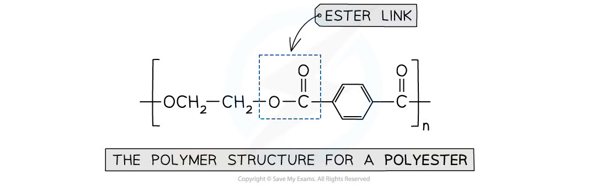
Polyesters
A polyester is formed when a diol reacts with a dicarboxylic acid. Each esterification eliminates one molecule of water:
\[\ce{HO-R'-OH + HOOC-R-COOH ->[-H2O] [-O-R'-O-C(O)-R-C(O)-]_{n}}\]
For example, ethane-1,2-diol and benzene-1,4-dicarboxylic acid form the polyester PET (terylene). The ester link is:
\[\ce{-O-C(=O)-}\]
To deduce the monomers from a repeat unit, break the chain through each ester link. Restore \(-\)OH to the oxygen-containing fragment and \(-\)COOH to the carbonyl-containing fragment.
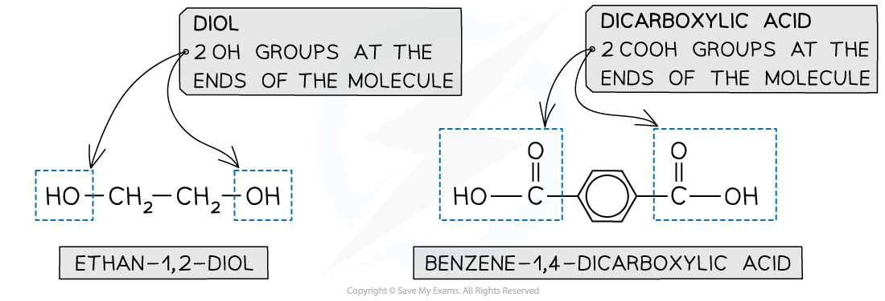
Worked example · Deducing a polyester repeat unit
Ethane-1,2-diol and benzene-1,4-dicarboxylic acid
The monomers ethane-1,2-diol and benzene-1,4-dicarboxylic acid react by condensation polymerisation. Draw one repeat unit of the polyester and identify the small molecule eliminated.
Identify the two functional groups that react: \(-\)OH and \(-\)COOH.
Form an ester link, \(\ce{-O-C(=O)-}\), between the two monomers.
Keep the ethane-1,2-diyl section, \(\ce{-CH2CH2-}\), and the benzene-1,4-dicarbonyl section in the repeat unit.
The repeat unit is
\[\ce{[-O-CH2-CH2-O-C(=O)-C6H4-C(=O)-]_{n}}\]
Each esterification eliminates water, H\(_2\)O.
Polyamides
A polyamide is formed when a diamine reacts with a dicarboxylic acid or a dioyl dichloride. The new link is an amide link:
\[\ce{-C(=O)-NH-}\]
With a dicarboxylic acid, water is eliminated. With a dioyl dichloride, HCl is eliminated and the reaction is generally more vigorous. Nylon-6,6 is made from hexane-1,6-diamine and hexanedioic acid; Kevlar and Nomex are aromatic polyamides (aramids).
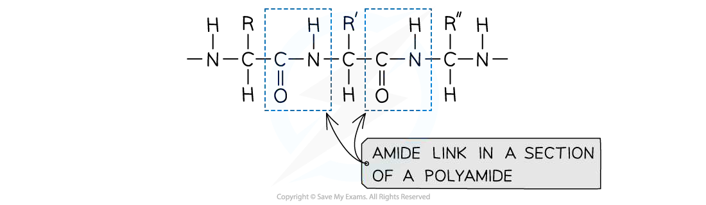
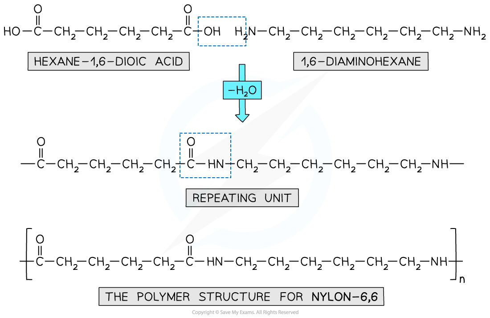
To identify an amide polymer’s monomers, break the chain through each \(\ce{C(=O)-N}\) bond. Add \(-\)COOH or \(-\)COCl to the carbonyl ends and \(-\)NH\(_2\) to the nitrogen ends.
Worked example · Deducing monomers from a polyamide
Nylon-6,6
A section of Nylon-6,6 is shown. Deduce the two monomers used to make the polymer and state the type of polymerisation.
- Break the chain through the amide links, \(\ce{-C(=O)-NH-}\).
- The nitrogen-containing fragment becomes hexane-1,6-diamine, \(\ce{H2N-(CH2)6-NH2}\).
- The carbonyl-containing fragment becomes hexanedioic acid, \(\ce{HOOC-(CH2)4-COOH}\).
- The reaction is condensation polymerisation, because a small molecule is eliminated as the amide links form.
- The polymer is a polyamide.
Polyurethanes
Polyurethanes are condensation polymers formed from a diisocyanate and a diol. The functional group \(\ce{-N=C=O}\) reacts with \(-\)OH to form a urethane link:
\[\ce{O=C=N-R^1-N=C=O + HO-R^2-OH -> [-C(=O)-NH-R^1-NH-C(=O)-O-R^2-O-]_{n}}\]
The urethane link contains both \(\ce{-NH-}\) and \(\ce{-C(=O)-O-}\) groups. Consequently, polyurethane chains can have hydrogen bonding as well as permanent dipole–dipole attractions between chains. Lycra is a useful example of a polyurethane fibre.
Amino acids, peptides and protein chains
An amino acid contains both an amino group and a carboxylic acid group. Two amino acids can join by condensation to form a peptide (amide) link:
\[\ce{-NH2 + HOOC- ->[-H2O] -NH-C(=O)-}\]
The product of two amino acids is a dipeptide; repeated condensation gives a polypeptide. Hydrolysis reverses this process and breaks the peptide links back into amino acids.
The side chain \(R\) varies between amino acids, so the same amide link occurs in proteins even though the side chains are different.
Worked example · Amino-acid condensation
Forming a dipeptide
Two amino acids react to form a dipeptide. Explain which atoms are removed as water and identify the new link.
- The hydroxyl group from the carboxylic acid group is removed.
- One hydrogen atom from the amino group is removed.
- These atoms form one molecule of water, H\(_2\)O.
- The remaining fragments are joined by a peptide bond, which is an amide link: \(\ce{-C(=O)-NH-}\).
- Because the monomers have complementary functional groups, further amino acids can join to extend the polypeptide chain.
35.2 Predicting the Type of Polymerisation
Addition polymerisation
Addition polymerisation uses monomers containing a carbon–carbon double bond, usually an alkene. The \(\pi\) bond opens and the monomers join without eliminating a small molecule.
For example, 1,2-dichloroethene forms poly(chloroethene) with the repeat unit:
\[\ce{n CHCl=CHCl -> [-CHCl-CHCl-]_{n}}\]
The polymer contains only carbon–carbon and carbon–hydrogen bonds along its backbone. The atoms originally attached to the double bond remain as side groups.
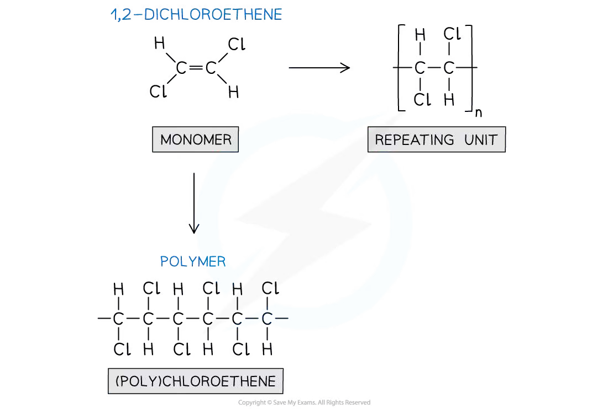
When two different alkene monomers are used, the product is a co-polymer. The repeat pattern and the side groups must be read from the monomers rather than guessed from the name.
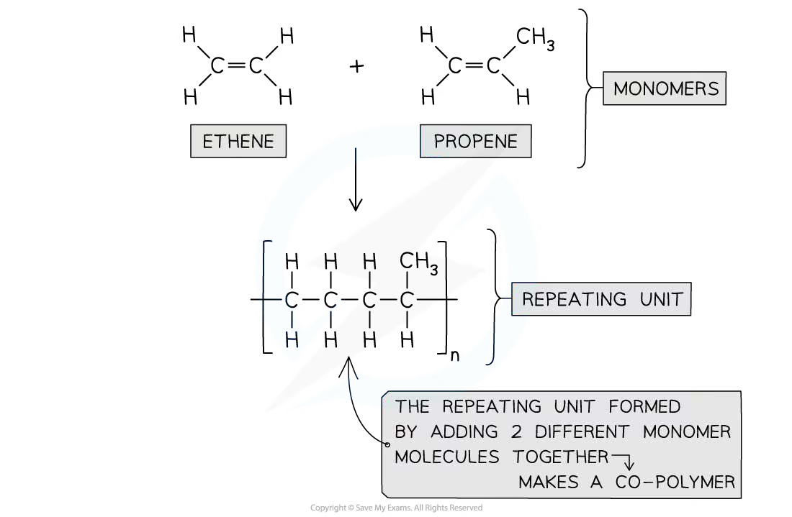
Condensation polymerisation versus addition polymerisation
Use the following decision process:
- Does the monomer contain a C=C bond that can open? If yes, addition polymerisation is likely.
- Do the monomers contain two functional groups such as \(-\)OH, \(-\)COOH, \(-\)COCl, \(-\)NH\(_2\) or \(-\)NCO? If yes, condensation polymerisation is likely.
- Is a small molecule such as H\(_2\)O or HCl eliminated? If yes, the reaction is condensation polymerisation.
- Does the polymer backbone contain ester, amide or urethane links? If yes, it is a condensation polymer.
- Does the backbone consist mainly of \(\ce{-C-C-}\) bonds with side groups? If yes, it is an addition polymer.
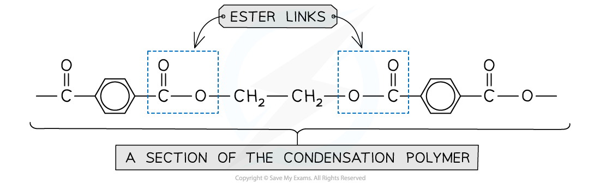
Worked example · Predicting the polymerisation type
A polymer containing ester links
A polymer chain contains repeated \(\ce{-C(=O)-O-}\) links. Predict whether it was made by addition or condensation polymerisation and explain your answer.
- The repeated \(\ce{-C(=O)-O-}\) group is an ester link.
- Ester links form when a carboxylic acid or acyl chloride reacts with an alcohol group.
- The monomers therefore need two functional groups so that the chain can continue.
- A small molecule, usually water (or HCl when acyl chlorides are used), is eliminated.
- The polymer was therefore made by condensation polymerisation, not addition polymerisation.
35.3 Degradable Polymers
Why some polymers are difficult to biodegrade
Many addition polymers, including poly(alkenes), have a strong, chemically unreactive \(\ce{-C-C-}\) backbone. They contain few polar functional groups for water or enzymes to attack, so they can persist in the environment for a long time.
Condensation polymers containing ester or amide links are more susceptible to hydrolysis. The link can be cleaved, producing smaller molecules that microorganisms can use more easily.
Biodegradable means that a material can be broken down by microorganisms through chemical and biological processes. Biodegradability is not determined by the word “polymer” alone: it depends on the bonds and functional groups in the chain.
Photodegradable polymers
A photodegradable polymer contains structural features that allow ultraviolet light to break the chain, often by introducing carbonyl groups or weak links into an otherwise carbon-chain polymer. Chain scission lowers the relative molecular mass and produces smaller fragments.
Photodegradation is different from biodegradation:
- photodegradation is initiated by light;
- biodegradation is carried out by microorganisms and their enzymes;
- a photodegradable material is not automatically fully biodegradable.
Hydrolysis of polyesters and polyamides
Hydrolysis is the breaking of a chemical bond using water. It is the reverse of condensation polymerisation.
For a polyester, acid hydrolysis uses aqueous acid and heat. The ester links are cleaved and the original alcohol and carboxylic acid monomers are formed:
\[\ce{-C(=O)-O- + H2O ->[H+][heat] -C(=O)-OH + HO-}\]
Base hydrolysis uses aqueous sodium hydroxide and heat. The carboxylic acid product is initially converted into its sodium carboxylate salt:
\[\ce{-C(=O)-O- + OH^- -> -C(=O)O^- + HO-}\]
For a polyamide, acid hydrolysis gives a carboxylic acid and an ammonium ion, while alkaline hydrolysis gives a carboxylate salt and an amine. The exact products depend on whether the starting polymer contains aromatic or aliphatic groups.
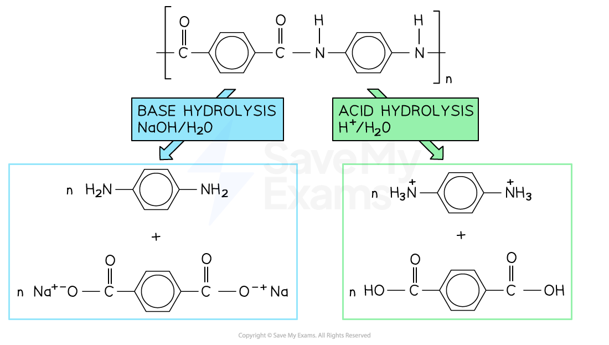
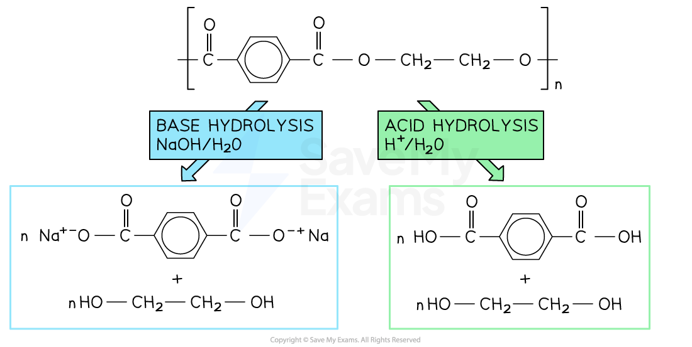
Worked example · Acid versus alkaline hydrolysis
Predicting the products of polyester hydrolysis
A polyester contains ester links. Outline the conditions for acid hydrolysis and state how the products differ from those formed by alkaline hydrolysis.
- For acid hydrolysis, heat the polymer with water and a dilute aqueous acid catalyst.
- The ester links are cleaved, producing the original dicarboxylic acid and diol.
- For alkaline hydrolysis, heat the polymer with aqueous sodium hydroxide.
- The dicarboxylic acid is formed as its sodium carboxylate salt, while the diol is unchanged.
- Acid hydrolysis gives \(-\)COOH groups; alkaline hydrolysis gives \(-\)COO\(^-\) Na\(^+\) groups.
Worked example · Classifying a repeat unit
Which polymers are likely to be biodegradable?
A table contains four repeat units. One contains only a carbon–carbon backbone, two contain ester links and one contains amide links. State which polymers are most likely to be biodegradable and explain your choice.
- Look for hydrolysable polar links rather than only looking at the side groups.
- Ester and amide links can be attacked by water or enzymes, so the polymers containing these links are more likely to degrade.
- The polymer containing only a strong \(\ce{-C-C-}\) backbone is the least likely to biodegrade.
- The answer is a prediction based on structure: actual degradation also depends on crystallinity, molecular mass, temperature, moisture and the microorganisms present.
Chapter checklist
Practice questions
7.7 Polymerisation (A Level Only) - Structured Questions
本页保留 7.7 题包中的全部 Structured Questions：Easy 3 题、Medium 4 题和 Hard 3 题。题目保留完整英文题干、所有分问、原始分值和题目中的独立图；答案按 Model Answers 整理，计算题、结构题和解释题均呈现完整步骤。
7.7 Polymerisation (A Level Only) - Easy
Example 1 · Condensation polymer monomers · 7.7 SQ Easy Q1
This question is about condensation polymers.
(a) State the names of two classes of organic molecules that can take part in condensation polymerisation. [2 marks]
(b) Draw the structure of the dicarboxylic acid whose formula is C\(_4\)H\(_6\)O\(_4\). The functional groups should be displayed clearly. [1 mark]
(c) State the IUPAC name of the dicarboxylic acid in part (b). [1 mark]
(d) Draw one repeat unit of the polymer formed when C\(_4\)H\(_6\)O\(_4\) polymerises with diethylamine, H\(_2\)NCH\(_2\)CH\(_2\)NH\(_2\). [2 marks]
Show mark scheme / model answer
(a) Any two from: dicarboxylic acids, diols, diamines, amino acids, dioyl chlorides or hydroxyl-carboxylic acids.
[2](b) The displayed structure is
\[\ce{HO-C(=O)-CH2-CH2-C(=O)-OH}\]
(c) Butane-1,4-dioic acid (succinic acid).
[1](d) The carboxylic acid groups react with the amine groups to form amide links. One acceptable repeat unit is
\[\ce{[-NH-CH2-CH2-NH-C(=O)-CH2-CH2-C(=O)-]_{n}}\]
The unit must have continuation bonds at both ends and show the \(\ce{-C(=O)-NH-}\) amide links.
[2]
Example 2 · Deducing monomers and hydrolysis · 7.7 SQ Easy Q2
The structure of a synthetic polyester is shown below.
(a) Deduce the structures of the two monomers used to make this polyester. [2 marks]
(b) One of the monomers is called benzene-1,4-dicarboxylic acid. State the name of the other one. [1 mark]
(c) Name the other product of the reaction between the two monomers in part (b). [1 mark]
Benzene-1,4-dicarboxylic acid will also react to form a polyamide. Which of the three molecules P, Q and R could react with benzene-1,4-dicarboxylic acid to form a polyamide?
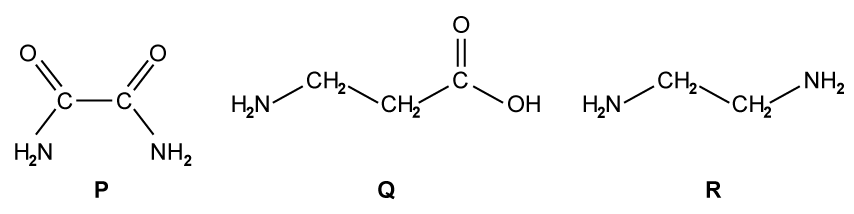
(d) Select the correct molecule. [1 mark]
Show mark scheme / model answer
- (a) The two monomers are benzene-1,4-dicarboxylic acid, \(\ce{HOOC-C6H4-COOH}\), and ethane-1,2-diol, \(\ce{HO-CH2-CH2-OH}\).
[2] - (b) The other monomer is ethane-1,2-diol.
[1] - (c) The other product is water, H\(_2\)O.
[1] - (d) The correct molecule is R, because it is a diamine with two \(\ce{-NH2}\) groups. A diamine can form amide links with the two carboxylic acid groups.
[1]
Example 3 · Hydrolysis of polymers · 7.7 SQ Easy Q3
This question is about hydrolysis of polymers.
(a) What is meant by a hydrolysis reaction? [1 mark]
(b) Describe the reaction conditions and state what occurs to the polyester during acid hydrolysis. [2 marks]
(c) Outline the difference in the product(s) between acid and base hydrolysis of a polyester. [2 marks]
(d) Draw structures for the products of acid and base hydrolysis of the following polymer.
[4 marks]
Show mark scheme / model answer
(a) Hydrolysis is the breaking of a chemical bond using water.
[1](b) Heat the polyester with aqueous acid. The ester links are broken and the original dicarboxylic acid and diol monomers are formed.
[2](c) Acid hydrolysis gives the carboxylic acid product, \(\ce{-COOH}\). Base hydrolysis with aqueous sodium hydroxide gives the sodium carboxylate salt, \(\ce{-COO^-Na^+}\), together with the alcohol/diol.
[2](d) The acid-hydrolysis products are benzene-1,4-dicarboxylic acid and ethane-1,2-diol:
\[\ce{HOOC-C6H4-COOH + HO-CH2-CH2-OH}\]
The alkaline-hydrolysis products are disodium benzene-1,4-dicarboxylate and ethane-1,2-diol:
\[\ce{NaOOC-C6H4-COONa + HO-CH2-CH2-OH}\]
[4]
7.7 Polymerisation (A Level Only) - Medium
Example 4 · Amino acids and polyamides · 7.7 SQ Medium Q1
Valylalanine shown in Fig. 1.1 is an example of a dipeptide composed of two amino acids, valine and alanine.
(a) When this compound is placed in acidic conditions, two species are formed. Draw one of these two species. [1 mark]
A dipeptide made from the amino acids cysteine and tryptophan is shown in Fig. 1.2.
(b) Draw the structure of the amino acid tryptophan. [1 mark]
Polymers formed from alkenes by addition polymerisation are usually too weak for use as fibres for weaving.
(c) In terms of intermolecular forces between the polymer chains, explain why polyalkenes are not suitable to be used as fibres for weaving. [3 marks]
(d) Explain why the molecule NH\(_2\)CH\(_2\)CH\(_2\)COCl can form a condensation polymer with itself. [2 marks]
Show mark scheme / model answer
(a) An acceptable acidic species has the amine group protonated, for example
\[\ce{H3N+ - CH(CH(CH3)2) - C(=O)-NH-CH(CH3)-COOH}\]
[1](b) Tryptophan is \(\ce{H2N-CH(CH2-C8H6N)-COOH}\), with the side chain shown as \(\ce{-CH2-}\) joined to an indole ring.
[1](c) Polyalkenes contain mainly non-polar \(\ce{C-C}\) and \(\ce{C-H}\) bonds. The chains therefore have only weak London forces between them. They do not have strong hydrogen bonding or other strong permanent dipole attractions, so the chains slide past one another and the fibres are weak.
[3](d) The molecule has two different functional groups, an amine group and an acyl chloride group. The amine can attack the carbonyl carbon of another molecule; an amide link forms and HCl is eliminated. Because both ends can react, a chain forms.
[2]
Example 5 · Nylon and Nomex · 7.7 SQ Medium Q2
A section of a nylon polymer is shown in Fig. 2.1.
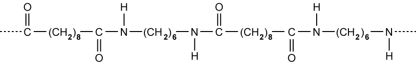
(a)(i) Draw the structures of two monomers that could be used to make this nylon. [2 marks]
(a)(ii) State the type of polymerisation involved in the formation of this nylon. [1 mark]
(b) Nylon can be used to make clothing. Suggest why nylon should be protected from spillages of strong acids and alkalis. [2 marks]
Nomex has a higher melting point than nylon and is used to make flame-resistant body suits.
(c) Suggest a reason why the melting point of Nomex is higher than that of nylon. [2 marks]
(d)(i) Draw the two monomers used to manufacture Nomex. [2 marks]
(d)(ii) State the formula of any by-products produced. [1 mark]
Show mark scheme / model answer
- (a)(i) The monomers are hexane-1,6-diamine, \(\ce{H2N-(CH2)6-NH2}\), and hexanedioic acid, \(\ce{HOOC-(CH2)4-COOH}\).
[2] - (a)(ii) Condensation polymerisation.
[1] - (b) Strong acids or alkalis hydrolyse the amide links in nylon. This breaks the polymer chains and weakens or damages the fibres.
[2] - (c) Nomex contains rigid benzene rings in the main chain. Its chains are less flexible and pack more effectively, and strong intermolecular attractions between the aromatic polyamide chains require more energy to overcome.
[2] - (d)(i) The monomers are 1,3-diaminobenzene and benzene-1,3-dicarboxylic acid.
[2] - (d)(ii) Water, H\(_2\)O, is formed.
[1]
Example 6 · Polyurethane and Nylon-66 hydrolysis · 7.7 SQ Medium Q3
Polyurethanes are polymers made by the reaction of a diisocyanate with a diol. R\(^1\) and R\(^2\) are hydrocarbon groups.
(a) Lycra is a polyurethane formed from the diisocyanate P and HOCH\(_2\)CH\(_2\)OH.
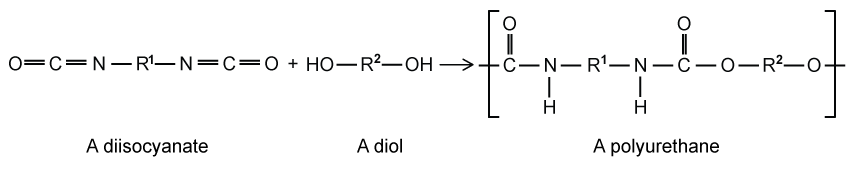
(i) Give the molecular formula for P. [1 mark]
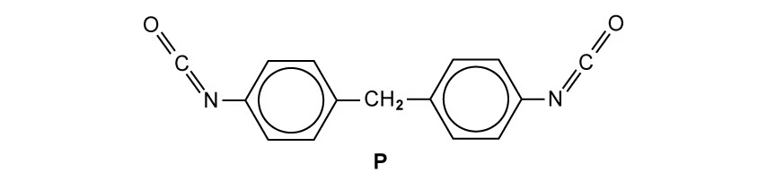
(ii) Draw the repeat unit of Lycra. [2 marks]
(b) Fibres of Lycra are strong due to the intermolecular forces between the polymer chains. Complete the table to identify two intermolecular forces responsible for this property and the groups involved. [2 marks]
(c) Name one example of each type of polymer: a synthetic polyamide and a synthetic polyester. [2 marks]
(d) The repeat unit of Nylon-66 is shown below.
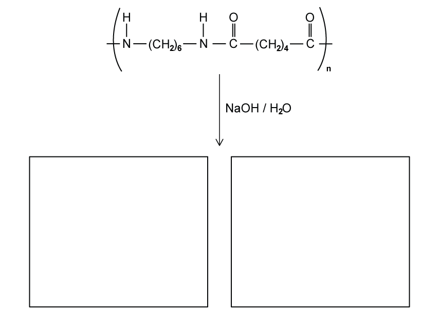
Draw the two products from the hydrolysis of Nylon-66. [2 marks]
Show mark scheme / model answer
(a)(i) From the displayed structure, P is a diisocyanate containing two phenyl rings joined by a methylene group. Its formula is C\(_{15}\)H\(_{12}\)N\(_2\)O\(_2\).
[1](a)(ii) The repeat unit contains the urethane link:
\[\ce{[-NH-C(=O)-C6H4-CH2-C6H4-C(=O)-NH-CH2-CH2-O-]_{n}}\]
with continuation bonds at both ends.
[2](b) Hydrogen bonding between \(\ce{N-H}\) and urethane \(\ce{C=O}\) groups; dipole–dipole attraction between the polar \(\ce{C=O}\) and \(\ce{C-N}\) bonds.
[2](c) Synthetic polyamide: Nylon-6,6, Kevlar or Nomex. Synthetic polyester: PET/terylene.
[2](d) Alkaline hydrolysis gives hexane-1,6-diamine, \(\ce{H2N-(CH2)6-NH2}\), and the disodium salt of hexanedioic acid, \(\ce{NaOOC-(CH2)4-COONa}\).
[2]
Example 7 · Biodegradable polymers and polypeptides · 7.7 SQ Medium Q4
(a)(i) Name an example of a synthetic polyester and a synthetic polyamide. [2 marks]
(a)(ii) Polyesters and polyamides are formed by condensation reactions. Name a molecule which is commonly eliminated in such reactions. [1 mark]
(b)(i) The table shows the repeat units of a number of polymers. Place a tick against the ones which are biodegradable.
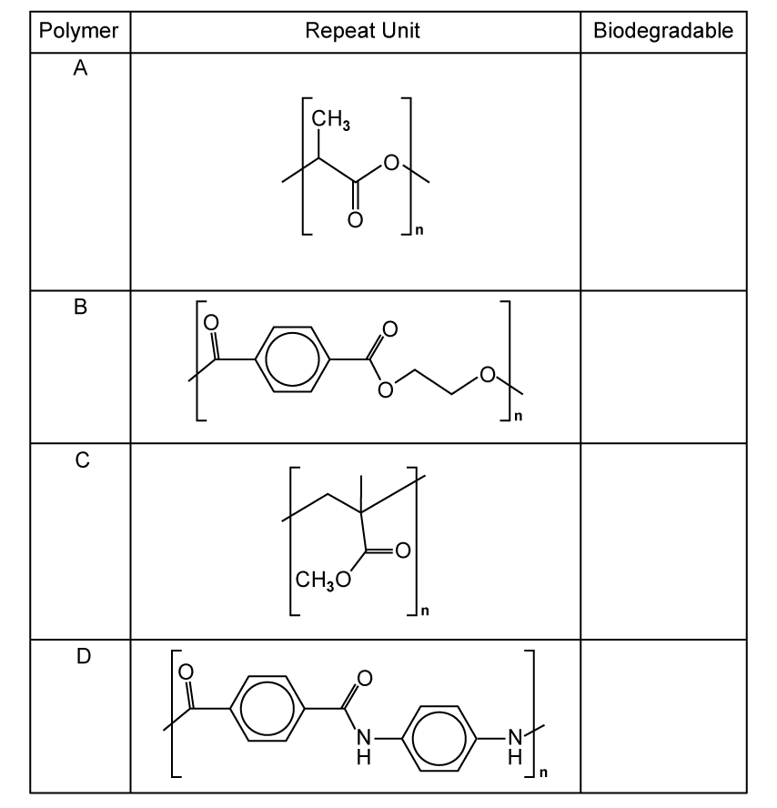
[2 marks]
(b)(ii) Draw the structures of two monomers used to form polymer B. [2 marks]
(c) A section of polypeptide was hydrolysed and the following amino acids were identified: T, U and V.
| Amino acid | Formula |
|---|---|
| T | CH\(_3\)CH(NH\(_2\))CO\(_2\)H |
| U | C\(_6\)H\(_5\)CH\(_2\)CH(NH\(_2\))CO\(_2\)H |
| V | H\(_2\)N(CH\(_2\))\(_4\)CH(NH\(_2\))CO\(_2\)H |
(i) Which of the amino acids T, U or V has the highest pH in an aqueous solution? Explain your answer. [2 marks]
(ii) State how many different dipeptides could be formed from a reaction mixture consisting of amino acids T and U. [1 mark]
(iii) Polypeptides contain a high proportion of carbon and hydrogen in their structures, yet many are soluble in water. By referring to the structure of a polypeptide, explain why. [2 marks]
Show mark scheme / model answer
- (a)(i) Examples: polyester PET/terylene and polyamide Nylon-6,6.
[2] - (a)(ii) Water, H\(_2\)O.
[1] - (b)(i) Polymers containing hydrolysable ester links are biodegradable; tick the repeat units with ester links (the table’s B and C structures). The carbon-only addition polymer and the aromatic polyamide are not the intended biodegradable choices in this question.
[2] - (b)(ii) Break polymer B at the ester links. The monomers are benzene-1,4-dicarboxylic acid and ethane-1,2-diol.
[2] - (c)(i) Amino acid V has the highest pH because its side chain contains a second amino group. It can accept an additional proton and makes the solution more alkaline.
[2] - (c)(ii) Four dipeptides: T–T, T–U, U–T and U–U.
[1] - (c)(iii) Polypeptides contain many polar amide/peptide groups. The \(\ce{C=O}\) and \(\ce{N-H}\) groups form hydrogen bonds with water, so the chains can be hydrated and dissolve even though the backbone also contains many C–C and C–H bonds.
[2]
7.7 Polymerisation (A Level Only) - Hard
Example 8 · General polyester polymerisation · 7.7 SQ Hard Q1
Polymers consist of monomers joined together by undergoing either addition or condensation polymerisation. Fig. 1.1 shows a dicarboxylic acid and a diol that can be used in a general condensation polymerisation reaction.
(a) Draw one repeat unit for this polymerisation. [1 mark]
(b) In terms of \(n\), state the number of molecules of water formed in the condensation polymerisation reaction of a general dicarboxylic acid and a general diol as shown in Fig. 1.1. [1 mark]
(c) Using displayed formulae, write the balanced equation for the condensation polymerisation of propanedioyl dichloride and butane-1,4-diol. [3 marks]
(d) Suggest an alternative pair of monomers that will produce the polymer from part (c). [1 mark]
Show mark scheme / model answer
(a) One acceptable repeat unit is
\[\ce{[-O-R'-O-C(=O)-R-C(=O)-]_{n}}\]
with continuation bonds at both ends.
[1](b) The number of water molecules is \(2n-1\). For one acid and one diol there is one ester link and one water; each additional monomer pair adds two links and two waters.
[1](c) Using propanedioyl dichloride and butane-1,4-diol:
\[\ce{n Cl-C(=O)-CH2-C(=O)-Cl + n HO-CH2-CH2-CH2-CH2-OH -> [-C(=O)-CH2-C(=O)-O-CH2-CH2-CH2-CH2-O-]_{n} + 2n HCl}\]
[3](d) Use propanedioic acid, \(\ce{HOOC-CH2-COOH}\), with butane-1,4-diol, \(\ce{HO-(CH2)4-OH}\).
[1]
Example 9 · Lactic acid and poly(lactic acid) · 7.7 SQ Hard Q2
Lactic acid has the structural formula CH\(_3\)CHOHCOOH.
(a)(i) Name all the functional groups in lactic acid. [1 mark]
(a)(ii) Give the systematic name of lactic acid. [1 mark]
(a)(iii) Lactic acid exhibits stereoisomerism. Draw three-dimensional structures for the two stereoisomers of lactic acid and name this type of stereoisomerism. [2 marks]
Poly(lactic acid) is a thermoplastic polyester that can be prepared from lactic acid. It is a renewable material used widely in 3D printers.
(b) Explain why lactic acid can be polymerised. [1 mark]
(c)(i) Draw the skeletal formula for three repeat units of poly(lactic acid). [1 mark]
(c)(ii) Explain what happens to the chirality of lactic acid when it is polymerised. [2 marks]
(d) Poly(lactic acid) can be prepared using a different monomer. Draw the skeletal formula of this monomer. Give the systematic name of another monomer that could make poly(lactic acid). [2 marks]
Show mark scheme / model answer
(a)(i) Lactic acid contains an alcohol/hydroxyl group and a carboxylic acid group.
[1](a)(ii) 2-hydroxypropanoic acid.
[1](a)(iii) The two non-superimposable mirror-image forms are enantiomers. This is optical isomerism.
[2](b) It contains both an alcohol group and a carboxylic acid group, so one molecule can react with another by esterification and form a chain.
[1](c)(i) A correct three-unit section is
\[\ce{-O-CH(CH3)-C(=O)-O-CH(CH3)-C(=O)-O-CH(CH3)-C(=O)-}\]
[1](c)(ii) The chiral carbon is not removed when the ester link forms. It remains attached to four different groups, so the chirality is retained in the polymer chain.
[2](d) The alternative monomer is 2-hydroxypropanoyl chloride, \(\ce{CH3-CH(OH)-COCl}\). Another acceptable monomer name is 2-hydroxypropanoic acid if the acid route is being stated.
[2]
Example 10 · Nomex and Kevlar · 7.7 SQ Hard Q3
Nomex is made from 1,3-diaminobenzene and 1,3-benzenedicarboxylic acid.
(a) Draw the skeletal structures of these monomers. [2 marks]
(b) Draw the structure of the Nomex polymer. [3 marks]
Kevlar is made from 1,4-diaminobenzene and 1,4-benzenedicarboxylic acid.
(c) Draw two repeat units of the polymer to show the strongest intermolecular force in Kevlar. [2 marks]
(d) State whether Kevlar or Nomex will have the higher melting point. Explain your answer. [2 marks]
Show mark scheme / model answer
(a) Draw benzene rings with \(-\)NH\(_2\) groups at positions 1,3 and with \(-\)COOH groups at positions 1,3: 1,3-diaminobenzene and benzene-1,3-dicarboxylic acid.
[2](b) The Nomex repeat unit contains alternating 1,3-disubstituted benzene rings joined by amide links:
\[\ce{[-NH-C(=O)-C6H4-C(=O)-NH-C6H4-]_{n}}\]
where both benzene rings have the substituents in the 1,3 positions.
[3](c) Draw two chains with \(\ce{N-H}\) groups pointing towards carbonyl oxygens on the neighbouring chain and show dashed hydrogen bonds, \(\ce{N-H...O=C}\).
[2](d) Kevlar has the higher melting point. Its para-substituted, linear chains pack more closely and form stronger, more extensive intermolecular hydrogen bonding; more energy is needed to separate the chains.
[2]